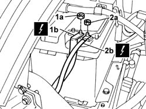
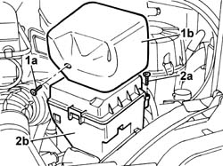
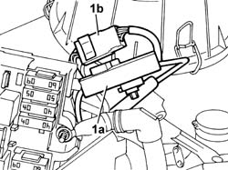
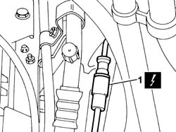
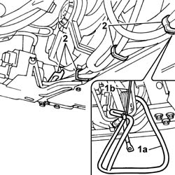
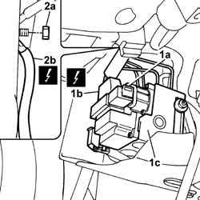
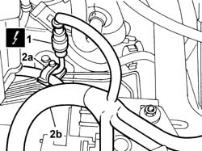
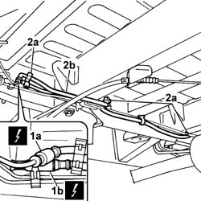
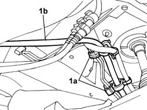

3340A80 ABS SYSTEM WIRING BUNDLE - R R OR REPLACE
- Path
- Procedures > 33 BRAKING SYSTEM > 3340 ANTI-LOCK BRAKE SYSTEM (ABS) > 3340A ABS CHECK/ADJUSTMENT DEVICES > 3340A80 ABS SYSTEM WIRING BUNDLE - R R OR REPLACE
- Kind
- repair procedure (removal / refitting; the operation number is the code)
- Applies to
- all engines; all production periods
- Interactive page
- https://sloeber94.github.io/elrnDB-fDct/en/#/244001133
Applies to: all engines; all production periods
 Removing
Removing
 Refitting
Refitting- Position the vehicle on the lift.
1. Undo the nut (1a) and disconnect the battery negative terminal (1b).
 | Description | Connector |
|---|---|---|
1b | Battery | A001B |
2. Undo the nut (2a) and disconnect the earth lead (2b) from the ABS wiring loom.
| Description | Connector |
|---|---|---|
2b | Battery earth | C001 |
- Release the ABS front earth lead from the retaining bands on the battery cradle.

Applies to: all engines; all production periods
1. Open stud (1a) on the junction unit protective gaiter (1b) and remove from the engine bay.
2. Undo bolt (2a) and remove protective cover (2b) from the engine bay junction unit.

Applies to: all engines; all production periods
- Release the control unit from the retaining clips on the mount.
1. Disconnect electrical connection (1a) and electrical connection (1b) to the ABS.
| Description | Connector |
|---|---|---|
1a | Front/ABS coupling | D186A |
| Description | Connector |
|---|---|---|
1b | Front/ABS coupling | D186B |

Applies to: all engines; all production periods
1. Disconnect the right front wheel phonic wheel sensor electrical connection.
| Description | Connector |
|---|---|---|
1 | Right front wheel sensor for ABS | K071 |
- To facilitate subsequent operations to remove the ABS wiring loom, tie the ABS front earth wire to the right front phonic wheel sensor electrical connection wire using a cord.
- Repeat the operation for the ABS electrical supply connection wires.

Applies to: all engines; all production periods
- Raise the lift.
Op. 7055B54 UNDER-ENGINE GUARD - R R
1. Remove the ABS wiring loom (1a) by pulling cord (1b) positioned previously downward.
2. Open the ABS wiring loom retaining clips.

Applies to: all engines; all production periods
1. Open device (1a) for undoing the electrical connection, then disconnect electrical connection (1b) on ABS hydraulic control unit (1c).
| Description | Connector |
|---|---|---|
1b | ABS control unit | M050 |
2. Undo the nut (2a) and disconnect ABS front earth lead (1b).
| Description | Connector |
|---|---|---|
2b | ABS front earth | C012 |

Applies to: all engines; all production periods
1. Disconnect the left front wheel phonic wheel sensor electrical connection.
| Description | Connector |
|---|---|---|
1 | Left front wheel sensor for ABS | K070 |
2. Open retaining band (2a), then partly remove ABS wiring loom (2b) by pulling the cord positioned previously downward.

Applies to: all engines; all production periods
1. Disconnect electrical connection (1a) of the right rear phonic wheel and disconnect electrical connection (1b) of the left rear phonic wheel sensor.
| Description | Connector |
|---|---|---|
1a | Right rear wheel sensor for ABS | K076 |
| Description | Connector |
|---|---|---|
1b | Left rear wheel sensor for ABS | K075 |
2. Open retaining bands (2a) positioned under the body and release the ABS wiring loom (2b).

Applies to: all engines; all production periods
- Open retaining bands (1a) in the steering column area, then remove the ABS wiring loom (1b) from the vehicle.

Applies to: all engines; all production periods
Refitting
Removing- Position a new ABS electrical wiring loom and secure to the body with retaining bands.
- Connect the left rear wheel phonic wheel sensor electrical connection.
| Description | Connector |
|---|---|---|
. | Left rear wheel sensor for ABS | K075 |
- Connect the right rear wheel phonic wheel sensor electrical connection.
| Description | Connector |
|---|---|---|
. | Right rear wheel sensor for ABS | K076 |
- Connect the left front wheel phonic wheel sensor electrical connection.
| Description | Connector |
|---|---|---|
. | Left front wheel sensor for ABS | K070 |
- Tighten the ABS electrical wiring loom to the body.
- Position the ABS front earth lead and tighten the retaining nut to the body.
| Description | Connector |
|---|---|---|
. | ABS front earth | C012 |
- Connect the electrical connection to the ABS control unit, then do up the safety device
| Description | Connector |
|---|---|---|
. | ABS control unit | M050 |
- To facilitate subsequent operations to refit the ABS wiring loom, tie up the ABS electrical connection wires using a cord.
- Repeat the operation by tying the ABS front earth wire to the right front phonic wheel sensor electrical connection.
- Position the ABS wiring loom on the front beam, then do up the retaining bands.
Op. 7055B54 UNDER-ENGINE GUARD - R R
- Lower the lift.
- Pull up the ABS electrical connection wires, then connect to the junction unit.
| Description | Connector |
|---|---|---|
. | Front/ABS coupling | D186A |
| Description | Connector |
|---|---|---|
. | Front/ABS coupling | D186B |
- Refit the junction unit to the mount.
- Close the protective cover and tighten the fixing bolt.
- Position the junction unit protective gaiter and close.
- Pull up the battery earth lead and right front phonic wheel sensor lead.
- Connect the right front wheel phonic wheel sensor electrical connection.
| Description | Connector |
|---|---|---|
. | Right front wheel sensor for ABS | K071 |
- Position the ABS wiring loom earth lead to the battery negative terminal, then tighten the nut.
| Description | Connector |
|---|---|---|
. | Battery earth | C001 |
- Connect the negative battery terminal.
| Description | Connector |
|---|---|---|
. | Battery | A001B |
- Remove the vehicle from the lift.